← Index · ← Previous · Next →
Authors: Karol Sajnok, Fabio Costa
Type: theory · Category: quantum information and computing · PDF: https://arxiv.org/pdf/2605.09014v1
Analysis basis: full PDF text, analyzed in chunks
Topic relevance: 🔥 quantum measurements 4/5 · correlated / nonlocal dissipation 2/5 · entanglement & information structure 2/5 · methods for driven-dissipative 2/5
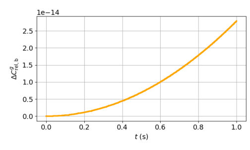
Summary. This paper develops a new resource theory for quantum coherence in continuous-variable systems, specifically focusing on the position basis. It overcomes the mathematical challenges of non-normalizable eigenstates by using a dephasing model based on finite-resolution measurements. The study demonstrates that coherence in this regime is fundamentally linked to the disturbance caused by dephasing.
Why it may be interesting. It provides a rigorous foundation for quantifying coherence in CV systems like optical fields and atom interferometry, where standard discrete-variable resource theories fail due to the infinite-dimensional nature of the position basis.
Main problem. Developing a mathematically consistent resource theory of quantum coherence for continuous-variable systems in the position basis, addressing the failure of standard finite-dimensional frameworks due to non-normalizable eigenstates.
Main result. The authors establish that continuous-basis coherence is tied to dephasing disturbance rather than distance from a set of diagonal states, and identify the relative-entropy dephasing loss as the only robust, axiomatic quantifier.
Method. The framework uses a physically motivated CPTP dephasing channel based on random momentum kicks (equivalent to finite-resolution position measurement) and evaluates coherence using relative-entropy and Hilbert-Schmidt dephasing losses.
Model / system. Continuous-variable systems in the position representation, specifically illustrated by a Gaussian wavepacket evolving in a Newtonian gravitational potential.
Key observables. Relative-entropy dephasing loss, Hilbert-Schmidt dephasing loss, interference visibility, and threshold witnesses for coherence certification.
Important parameters / regimes. Spatial coherence scale (l_g), wavepacket width (sigma), momentum-kick distribution (g), and the ratio of wavepacket width to coherence scale.
Assumptions / limitations. Assumes a physically regular regime where the dephasing kernel satisfies |g(xi)| < 1 for xi != 0, and focuses on CPTP dephasing-covariant operations.
Figures summary. Figure 1 shows the time-dependent evolution of the lower bound of the relative-entropy dephasing loss for a wavepacket in a gravitational potential.
Paper structure. The paper introduces the problem of continuous-basis coherence, defines a physically motivated dephasing channel, establishes the resource-theoretic framework (free operations and quantifiers), compares different measures, introduces threshold witnesses, and concludes with an application to gravitational wavepacket dynamics.
We develop a resource-theoretic framework for quantum coherence directly in continuous basis, with emphasis on the position representation. Since position eigenstates are non-normalizable generalized eigenstates, the standard finite-dimensional dephasing map cannot be transferred directly to normal states. We therefore introduce a physically motivated dephasing channel based on random momentum kicks, equivalently described as the unconditional back-action of a finite-resolution position measurement. This yields a fixed-point notion of incoherence and a natural class of dephasing-covariant free operations. For physically relevant kernels, however, the fixed-point set contains no normal states, showing that continuous-basis coherence is tied to dephasing disturbance rather than to distance from a nonempty set of diagonal states. We study two quantifiers built from the channel action: a relative-entropy dephasing loss and a Hilbert-Schmidt dephasing loss. The former satisfies the main resource-theoretic properties under the free operations considered, while the latter is convex and experimentally transparent but fails monotonicity and strong monotonicity. We also formulate threshold witnesses for certifying coherence above a finite value and connect them, in a two-path setting, with interference visibility. Finally, we illustrate the framework with a Gaussian wavepacket evolving in a gravitational potential. The resulting theory provides a mathematically consistent and physically motivated treatment of coherence in continuous-variable systems.
Authors: Eduardo K. Soares
Type: theory · Category: quantum information and computing · PDF: https://arxiv.org/pdf/2605.08402v1
Analysis basis: abstract only; PDF text extraction failed or PDF unavailable
Topic relevance: 🔥 entanglement & information structure 4/5 · correlated / nonlocal dissipation 2/5 · methods for driven-dissipative 2/5 · non-equilibrium dynamics 2/5
Summary. This paper compares two different methods for spreading entanglement across spin chains to facilitate quantum communication. It finds that using virtual excitations and optimized boundary couplings is faster and more resistant to noise than traditional alternating coupling methods. This discovery suggests a more scalable way to implement quantum information tasks in solid-state hardware.
Why it may be interesting. This paper is highly relevant for researchers in open quantum systems and many-body dynamics as it provides a framework for understanding how entanglement resilience can be engineered in solid-state spin-chain architectures.
Main problem. The study investigates the efficient generation and distribution of quantum entanglement across spin chains for use in quantum information processing.
Main result. A protocol based on virtual excitations and optimized boundary couplings (P2) outperforms an alternating coupling protocol (P1) in terms of speed, entanglement fidelity, and robustness against noise and imperfections.
Method. The work utilizes effective model reductions, effective trimer-model approximations, and open quantum systems techniques to analyze entanglement dynamics.
Model / system. The system consists of spin chains acting as platforms for qubit communication, specifically comparing a model with alternating weak/strong couplings and a model with symmetric boundary couplings.
Key observables. Quantum entanglement (generation and distribution), speed of entanglement, and robustness against noise/imperfections.
Important parameters / regimes. Alternating coupling strengths, symmetric boundary couplings, and presence of noise/fabrication imperfections.
Assumptions / limitations. The analysis assumes the validity of effective model reductions and the applicability of open quantum systems frameworks to solid-state devices.
Paper structure. The paper introduces the problem of quantum information distribution, compares two specific entanglement protocols (P1 and P2), evaluates their performance using effective models and open system techniques, and concludes with the experimental potential of the virtual-coupling approach.
Classical computation relies heavily on information manipulation. Each component of a hardware needs to communicate with others, and this is done by encoding information into strings of bits and application of logical operations. When dealing with quantum technologies, there arises a new set of paradigms and devices, based on manipulations of qubits, the quantum analogues of conventional bits. This work investigates the generation and distribution of quantum entanglement, a uniquely non-classical correlation, across spin chains, which serve as promising platforms for quantum information processing. We systematically compare two distinct entanglement generation protocols: Protocol 1 (P1), based on alternating weak and strong couplings that create a band structure enabling an effective trimer-model approximation, and Protocol 2 (P2), which employs symmetric boundary couplings and virtual excitations to establish a direct effective interaction between the chain ends. Our results demonstrate that a protocol based on virtual excitations and optimized boundary couplings consistently outperforms its counterpart in speed, achieved entanglement, and robustness against fabrication imperfections and noise. Furthermore, by employing effective model reductions and open quantum systems techniques we provide a comprehensive framework for understanding the resilience of distributed entanglement in solid-state quantum devices. The characteristics of the virtual-coupling protocol highlight its potential for experimental implementation in scalable quantum technologies.
Authors: Dibakar Roychowdhury
Type: theory · Category: quantum information and computing · PDF: https://arxiv.org/pdf/2605.10786v1
Analysis basis: abstract only; PDF text extraction failed or PDF unavailable
Topic relevance: 🔥 entanglement & information structure 4/5 · non-equilibrium dynamics 3/5 · scars & prethermalization 2/5
Summary. This paper investigates Krylov complexity in the BMN matrix model by reducing it to a pulsating fuzzy sphere model. It provides an analytical framework to compute Lanczos coefficients in both large and small deformation regimes. This work contributes to the understanding of how complexity evolves in matrix-based physical systems.
Why it may be interesting. This is interesting for researchers in many-body dynamics as it explores the growth of operator complexity (Krylov complexity) in a matrix model context, which is a key topic in understanding quantum chaos and information scrambling.
Main problem. The study aims to investigate the growth of Krylov complexity within the BMN matrix model.
Main result. The paper provides an analytical setup to calculate Lanczos coefficients in both the large and small deformation limits of the matrix model.
Method. The authors use a systematic reduction of the BMN matrix model into the pulsating fuzzy sphere model to facilitate analytical calculations.
Model / system. The BMN (Berenstein-Maldacena-Nastase) matrix model, specifically analyzed through its reduction to the pulsating fuzzy sphere model.
Key observables. Krylov complexity and Lanczos coefficients.
Important parameters / regimes. Large and small deformation limits of the matrix model.
Paper structure. The paper presents an analytical setup for the reduction of the BMN model and calculates Lanczos coefficients in specific limits.
We explore Krylov complexity in the BMN matrix model following a systematic reduction of it, known as the pulsating fuzzy sphere model. We present an analytical setup that allows us to calculate Lanczos coefficients in both large and small deformation limits of the matrix model.
Authors: Hidemasa Yamane
Type: theory · Category: quantum information and computing · PDF: https://arxiv.org/pdf/2605.09056v1
Analysis basis: abstract only; PDF text extraction failed or PDF unavailable
Topic relevance: 🔥 correlated / nonlocal dissipation 4/5 · non-equilibrium dynamics 3/5 · methods for driven-dissipative 2/5
Summary. The paper shows that periodic driving of one quantum level can induce decay in a separate, undriven level by shifting energy into the continuum via Floquet sidebands. This allows for highly selective control over dissipation in structured environments. The mechanism is shown to be tunable via the drive amplitude.
Why it may be interesting. This work is highly relevant for open quantum systems and quantum optics as it provides a mechanism for 'remote' control of dissipation, allowing for the engineering of decoherence profiles in specific qubits without directly driving them.
Main problem. How to selectively control the dissipation of an undriven quantum state using local periodic driving in a structured environment.
Main result. The authors demonstrate that periodic driving can activate a remote dissipation channel for an undriven level by creating photon-assisted Floquet sidebands that overlap with the level's energy, while the driven level remains long-lived.
Method. The study utilizes Floquet theory to analyze photon-assisted channels and employs a Brillouin-Wigner-Feshbach projection to formulate a complex-eigenvalue problem for the Floquet Hamiltonian. Results are verified via direct numerical integration of the time-dependent Schrodinger equation.
Model / system. A minimal system consisting of two discrete energy levels coupled to a one-dimensional tight-binding continuum with a finite bandwidth, where only one level is subject to periodic driving.
Key observables. Decay rates of the driven and undriven levels, and the time-domain decay envelope.
Important parameters / regimes. Drive frequency, drive amplitude (controlling Bessel-weighted couplings), and the energy position of levels relative to the continuum band edges.
Assumptions / limitations. The system is treated within the framework of a tight-binding continuum and Floquet theory, assuming the validity of the Brillouin-Wigner-Feshbach projection.
Paper structure. The paper introduces the problem of selective dissipation, presents the theoretical mechanism using Floquet theory and sideband analysis, provides a mathematical formulation via the Brillouin-Wigner-Feshbach projection, and validates the results through numerical integration of the Schrodinger equation.
We show how local periodic driving can be used to control dissipation in a structured environment in a highly selective manner. As a minimal setting, we consider two discrete levels coupled to a one-dimensional tight-binding continuum with a finite bandwidth, where only one level is driven while the other remains undriven. Without driving, both bare energies are placed outside the static continuum band so that neither level decays. We demonstrate that the drive can nevertheless activate a selective remote dissipation channel: the undriven level acquires a finite decay rate, whereas the driven level can remain long-lived. The mechanism is clarified within Floquet theory. Periodic driving generates photon-assisted channels shifted by integer multiples of the drive frequency, effectively creating a ladder of drive-shifted continuum sidebands (Floquet channels). A decay channel for the undriven level opens once its bare energy overlaps an open sideband accessed via drive-enabled pathways; in the tight-binding example, the decay is strongly enhanced near the sideband edge due to the increased density of states. The dominant remote pathway is controlled by Bessel-weighted couplings and can be switched and strongly suppressed by tuning the drive amplitude. We verify these predictions by direct numerical integration of the time-dependent Schrödinger equation. We also formulate a complex-eigenvalue problem for the Floquet Hamiltonian by eliminating the continuum via a Brillouin--Wigner--Feshbach projection, and show that the pole-implied decay rate quantitatively reproduces the time-domain decay envelope.
Authors: Alessandro Taloni, Gianni Pagnini, Aleksei Chechkin
Type: theory · Category: statistical mechanics · PDF: https://arxiv.org/pdf/2605.10561v1
Analysis basis: full PDF text, analyzed in chunks
Topic relevance: 🔥 Keldysh / 2PI / non-Gaussian methods 4/5 · non-equilibrium dynamics 3/5 · methods for driven-dissipative 2/5
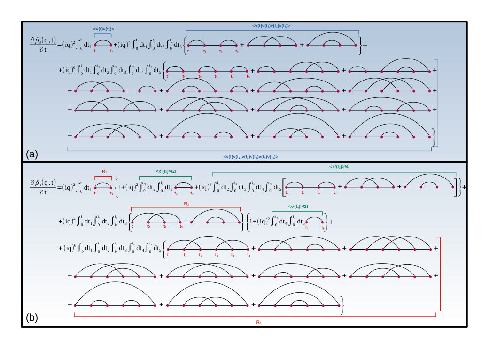
Summary. The authors derive an exact, hierarchical diffusion equation for any Gaussian velocity process, regardless of stationarity. By using a diagrammatic approach similar to Feynman diagrams, they show how an infinite series of terms restores the correct Gaussian statistics that truncated models fail to capture.
Why it may be interesting. This provides a rigorous framework for describing non-equilibrium dynamics and memory effects, which is highly relevant for understanding open quantum systems and many-body dynamics subject to colored noise.
Main problem. Deriving an exact evolution equation for the probability density function of particle displacements in non-Markovian Gaussian stochastic processes, specifically addressing the failure of existing models to maintain Gaussianity and positivity.
Main result. The derivation of a closed, infinite-series non-Markovian diffusion equation that generalizes the Fokker-Planck description and restores Gaussianity in the infinite-order limit.
Method. A systematic hierarchy of equations based on Wick's theorem and a diagrammatic technique that reorganizes Wick contractions into a sum over geometrically connected diagrams, analogous to linked-cluster expansions in field theory.
Model / system. A particle undergoing displacement driven by an arbitrary Gaussian velocity process, which can be non-stationary and non-Markovian, encompassing models like the Ornstein-Uhlenbeck process and Fractional Brownian Motion.
Key observables. Probability density function (PDF) of particle positions and its characteristic function.
Important parameters / regimes. Velocity two-time correlation functions, Hurst exponent (H) for fractional Brownian motion, damping coefficient (gamma), and the long-time/overdamped limits.
Assumptions / limitations. The velocity process is assumed to be Gaussian; the derivation for the antipersistent regime (0 < H < 1/2) remains an open problem due to non-integrable kernels.
Figures summary. Figure 1 shows the diagrammatic representation of the moment-truncated characteristic function using Wick pairings and its reorganization into a compact expression using connected Wick diagrams.
Paper structure. The paper introduces the problem of non-Markovian Gaussian processes, develops a mathematical framework using Wick's theorem and diagrammatic expansions, applies this to specific models like OU and fBM, and discusses the limits and implications of the resulting hierarchy.
We derive the exact evolution equation for the probability density function of particle displacements generated by arbitrary Gaussian velocity processes, when neither Markovianity and nor stationarity are assumed. Starting from the characteristic function of the density of the position, we construct a systematic hierarchy of equations based on Wick's theorem, in which the dynamics is governed by sums of geometrically connected Wick contractions. This approach yields a closed non-Markovian diffusion equation that generalizes the Fokker-Planck description and preserves Gaussianity only in the infinite-order limit.
Authors: Ouyang Ting, James Fullwood, Zhen Wu
Type: theory · Category: quantum information and computing · PDF: https://arxiv.org/pdf/2605.10375v1
Analysis basis: abstract only; PDF text extraction failed or PDF unavailable
Topic relevance: 🔥 quantum measurements 4/5 · entanglement & information structure 2/5 · methods for driven-dissipative 2/5
Summary. This paper solves the problem of finding Bayesian inverses for unital qubit channels to enable operational time-reversal symmetry. By reducing the problem to Pauli channels, the authors characterize exactly when time-symmetric correlations can be achieved in noisy single-qubit systems. This provides a fundamental understanding of reversibility in open quantum dynamics.
Why it may be interesting. This is highly relevant for researchers in open quantum systems as it provides a rigorous framework for understanding how to recover time-symmetric correlations in inherently irreversible, noisy environments.
Main problem. The paper addresses the problem of determining when a Bayesian inverse exists for unital quantum channels acting on a single qubit to achieve operational time-reversal symmetry.
Main result. The authors provide a complete description of the conditions under which operational time-reversal symmetry is attainable for sequential measurements of a single qubit under unital noise.
Method. The researchers reduce the problem of finding a Bayesian inverse for a general unital qubit channel to the simpler case of finding a Bayesian inverse for a Pauli channel.
Model / system. The study focuses on single-qubit systems undergoing unital quantum channels, specifically looking at Pauli channels which are mixtures of unitary Pauli operations.
Key observables. time-symmetric correlations for sequential measurements
Important parameters / regimes. unital channels, fiducial reference state rho, single qubit
Assumptions / limitations. The analysis is restricted to unital channels acting on a single qubit.
Paper structure. The paper introduces the concept of Bayesian inverses and time-reversal symmetry, demonstrates a reduction of the unital qubit channel problem to Pauli channels, and concludes with a complete characterization of the existence of these inverses.
The Bayesian inverse of a quantum channel $\mathcal{E}$ is a channel $\mathcal{F}$ in the reverse direction of $\mathcal{E}$ that yields time-symmetric correlations for sequential measurements performed on open quantum systems. Such an operational form of time-reversal symmetry for open quantum systems is quite remarkable, as the dynamics of open quantum systems are inherently irreversible due to system-environment interactions. Similar to the Petz map, a Bayesian inverse $\mathcal{F}$ is defined with respect to a fiducial reference state $ρ$ for the channel $\mathcal{E}$. However, Bayesian inverses do not always exist, and it is often a non-trivial task to determine the set of states $ρ$ for which a Bayesian inverse of $\mathcal{E}$ exists. In this work, we solve the general problem of quantum Bayesian inversion for unital channels acting on a single qubit. Our analysis is streamlined by demonstrating that finding a Bayesian inverse for a unital qubit channel may be reduced to finding a Bayesian inverse of a Pauli channel, which is simply a mixture of unitary channels associated with the Pauli matrices. As such, we provide a complete description of when operational time-reversal symmetry is attainable for sequential measurements of a single qubit in the presence of unital noise.
Authors: Pascal Stadler, Florian G. Eich, Benedikt M. Schoenauer, Peter Schmitteckert, Michael Marthaler, Gary Schmiedinghoff, Peter K. Schuhmacher, Sebastian Zanker
Type: both · Category: quantum information and computing · PDF: https://arxiv.org/pdf/2605.10667v1
Analysis basis: abstract only; PDF text extraction failed or PDF unavailable
Topic relevance: 🔥 QC/QI experiment 4/5 · non-equilibrium dynamics 2/5 · spintronics-quantum-optics interface 2/5
Summary. This paper presents a workflow for simulating the magnetic excitations of chromium tri-halide monolayers using a commercial quantum computer. By mapping ab-initio results to an effective spin model, the authors show that quantum hardware can provide efficient scaling for spin-wave spectra compared to classical methods. This demonstrates the growing utility of quantum cloud access for domain experts in materials science.
Why it may be interesting. It demonstrates a practical bridge between material science (ab-initio) and quantum computing (NISQ), showing how many-body dynamics of real materials can be mapped to quantum algorithms.
Main problem. Demonstrating physically meaningful simulations of real materials on NISQ-era quantum hardware, specifically regarding the scalability and accuracy of spin-wave spectra simulations.
Main result. The authors successfully simulated low-energy spin-wave spectra of chromium tri-halide monolayers on a commercial quantum cloud platform, achieving quasi-constant wall-time scaling compared to the exponential scaling of classical methods.
Method. The workflow involves deriving an effective spin model from ab-initio electronic structure calculations and performing real-time propagation of the spin system on the IQM Resonance quantum processor.
Model / system. The system consists of chromium tri-halide monolayers, modeled as an effective spin system derived from ab-initio calculations to study low-energy magnetic excitations.
Key observables. Spin-wave spectra (low-energy magnetic excitations).
Important parameters / regimes. Systems with up to 48 qubits; NISQ device regime.
Assumptions / limitations. The simulation relies on the validity of the effective spin model derived from ab-initio electronic structure calculations.
Paper structure. The paper follows a pipeline from ab-initio electronic structure calculations to effective spin model derivation, followed by quantum hardware implementation and validation against classical benchmarks.
Quantum computers are increasingly accessible, yet demonstrations of physically meaningful simulations for real materials remain scarce. In our work we simulate low-energy magnetic excitations, specifically spin-wave spectra, of chromium tri-halide monolayers. Starting from ab-initio electronic structure calculations for these two-dimensional magnets, we derive an effective spin model and simulate low-energy spin excitations using a real-time propagation of the spin system on the commercial quantum computing cloud platform IQM Resonance. The results for systems with up to 48 qubits are validated against classical benchmarks. While some spectral features remain challenging for today's NISQ devices, our simulation achieves good agreement at quasi-constant wall-time scaling, compared to the exponential scaling of classical methods. Our results demonstrate that, even in the absence of quantum advantage, useful quantum simulations of real materials are becoming possible for domain experts via commercial cloud access to quantum computers.
Authors: Solomon McKiernan, Luca Sapienza
Type: both · Category: quantum information and computing · PDF: https://arxiv.org/pdf/2605.10801v1
Analysis basis: abstract only; PDF text extraction failed or PDF unavailable
Topic relevance: 🔥 QC/QI experiment 4/5 · quantum optics experiment 3/5
Summary. The researchers implemented a photonic quantum neural network and showed it can outperform classical neural networks in classification tasks using far fewer parameters. By deploying these circuits on a real six-qubit photonic processor, they demonstrated that gate-based quantum machine learning is viable on current hardware even in the presence of noise.
Why it may be interesting. This work demonstrates a practical proof-of-principle for using photonic hardware for quantum machine learning, showing that quantum circuits can outperform classical networks in parameter efficiency for specific tasks.
Main problem. Evaluating the expressive power and classification performance of gate-based photonic quantum neural networks (QNNs) compared to classical artificial neural networks (ANNs).
Main result. The photonic QNN demonstrated an algorithmic advantage, solving nonlinearly separable tasks with significantly fewer parameters than equivalent ANNs, and achieved up to 100% accuracy on a six-qubit photonic processor.
Method. The study uses effective dimension as a capacity measure and compares cross-entropy loss and accuracy across photonic and superconducting QNNs and ANNs using gradient-free optimization.
Model / system. A gate-based variational quantum classifier implemented using single photons, probabilistic gates, and a six-qubit photonic quantum processor.
Key observables. Effective dimension, cross-entropy loss, prediction accuracy, and robustness to photon loss and phase-shifter imperfections.
Important parameters / regimes. Number of trainable parameters, photon loss rates, and phase-shifter imperfections.
Assumptions / limitations. The study assumes realistic noise processes including photon loss and hardware imperfections are representative of current photonic computing capabilities.
Paper structure. The paper introduces a gate-based photonic QNN, evaluates its expressive power via effective dimension, compares performance against classical ANNs using binary classification tasks, assesses robustness to noise, and concludes with remote deployment results on a photonic quantum processor.
We report on a gate-based variational quantum classifier implemented with single photons and probabilistic gates, to emulate the standard quantum circuit model framework. We evaluate the expressive power of two deployable quantum neural networks (QNNs) by computing their effective dimension, a capacity measure grounded in a proven generalization-error bound, and compare them with classical artificial neural networks (ANNs) of equivalent trainable-parameter count. Supervised binary classification tasks are used to benchmark performance across photonic and superconducting QNNs, both of which exhibit superior converged (lower) cross-entropy loss and (higher) prediction accuracy relative to matched-parameter ANNs. For a nonlinearly separable task, our photonic QNN with a single pair of trainable parameters successfully converged (loss 0.04 and accuracy 100%), whereas the equivalent ANN failed to learn the decision boundary, saturating at random-guessing performance. We simulate photonic quantum circuits, training them on the XOR problem and a two-class Iris subset using gradient-free optimization, and assess their robustness to sampling errors under realistic noise processes including photon loss and phase-shifter imperfections. Circuits with comparatively high effective dimension were deployed remotely on a six-qubit photonic quantum processor, achieving classification accuracies of up to 100% in both online and offline learning settings. Notably, even the simplest QNN deployed, with just two trainable parameters, successfully solved tasks that classically require ANNs with at least quadruple the number of parameters, suggesting an emergent algorithmic advantage. Overall, these results demonstrate a clear proof-of-principle that gate-based QNNs can be realized and trained effectively on current photonic hardware, providing proof of algorithmic advantage on a gate-based photonic QNN.
Authors: Zachary Bogorad, Roni Harnik
Type: theory · Category: quantum information and computing · PDF: https://arxiv.org/pdf/2605.08337v1
Analysis basis: abstract only; PDF text extraction failed or PDF unavailable
Topic relevance: 🔥 entanglement & information structure 4/5 · quantum measurements 3/5
Summary. This paper establishes that the effectiveness of coherent enhancement in detectors is fundamentally limited by the entanglement entropy of the detector. By linking entanglement to quantum Fisher information and scattering cross sections, the authors provide a unified theoretical bound on how much sensitivity can be improved as a function of system size.
Why it may be interesting. It provides a fundamental link between entanglement entropy and the practical limits of quantum metrology and scattering-based detection, which is highly relevant for designing high-sensitivity quantum sensors.
Main problem. The paper addresses the fundamental limitations on the ability to achieve coherent enhancement in detectors due to the difficulty of preparing specific quantum states.
Main result. The authors prove that the scaling of coherent enhancement with system size is quantitatively constrained by the single-mode entanglement entropy of the detector, providing bounds that interpolate between incoherent and fully coherent regimes.
Method. The study uses the framework of quantum Fisher information and the quantum Cramér-Rao bound, alongside an analysis of scattering cross sections.
Model / system. The paper considers a general detector interacting with a signal, applicable to both parameter-estimation (metrology) problems and scattering processes.
Key observables. Quantum Fisher information, single-mode entanglement entropy, scattering cross sections, and parameter sensitivity.
Important parameters / regimes. System size, entanglement entropy, and the transition between incoherent and coherent regimes.
Paper structure. The paper introduces the problem of coherent enhancement, presents bounds based on entanglement entropy, discusses the results through the lens of quantum Fisher information and scattering cross sections, and concludes with implications for detector state preparation.
Coherent enhancement is a powerful mechanism for improving the sensitivity of a wide range of detectors, but its practical use is often limited by the difficulty of preparing the required quantum states. We show that this difficulty has a fundamental origin: coherent enhancement of a signal interacting with a detector is quantitatively constrained by entanglement. We prove general bounds on how the strength of coherent effects can scale with system size, as a function of the single-mode entanglement entropy of the detector. These bounds smoothly interpolate between the incoherent and fully coherent regimes, and apply both to parameter-estimation problems and to scattering processes. We discuss these results from two complementary perspectives: First, they appear as bounds on the quantum Fisher information of many-body states, which translate directly into limits on parameter sensitivity via the quantum Cramér-Rao bound. Second, they can be interpreted as limits on a class of scattering cross sections, leading to predictions for how minimum detectable interaction strengths scale with target size. Together, these results provide a unified view of coherent enhancement in metrology and scattering experiments, and motivate the development of new techniques for generating entangled detector states.
Authors: Jin Yang, Yaghmorassene Hebib, Chao Zhang
Type: theory · Category: quantum gases · PDF: https://arxiv.org/pdf/2605.10254v1
Analysis basis: full PDF text, analyzed in chunks
Topic relevance: 🔥 non-equilibrium dynamics 4/5 · analog quantum simulation 3/5
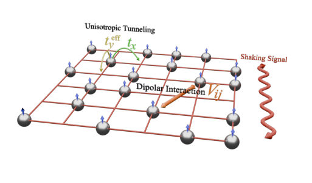
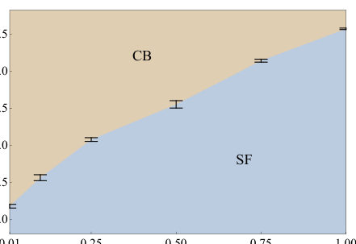
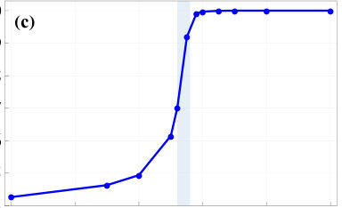
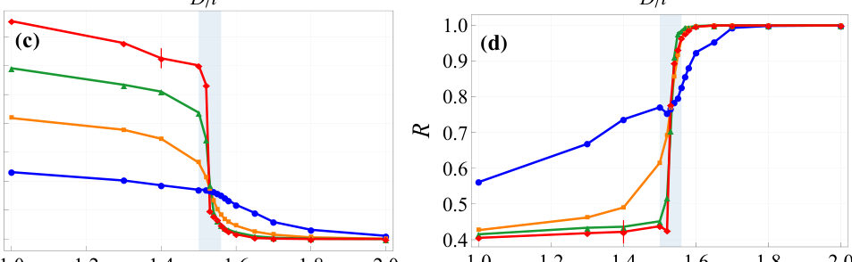
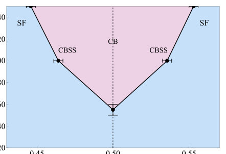
Summary. This paper explores how periodic shaking of a 2D lattice of dipolar bosons can tune hopping anisotropy to control the competition between superfluidity and density order. The authors find that suppressing transverse motion enhances the stability of the checkerboard phase and identify a narrow supersolid regime. They also characterize the phase transition as weakly first-order using quantum Monte Carlo simulations.
Why it may be interesting. It demonstrates how periodic driving (Floquet engineering) can be used as a precise tool to control quantum phase transitions and stabilize exotic phases like supersolids in ultracold atomic/molecular systems.
Main problem. Investigating how Floquet-engineered kinetic anisotropy reshapes the competition between superfluid and checkerboard density-ordered phases in dipolar boson systems.
Main result. Increasing kinetic anisotropy lowers the interaction strength required to stabilize checkerboard order and reveals a narrow checkerboard supersolid regime upon doping. The superfluid-to-checkerboard transition is identified as a weakly first-order transition.
Method. Sign-problem-free worm-algorithm quantum Monte Carlo simulations combined with high-frequency Floquet expansion and finite-size scaling analysis.
Model / system. Hard-core dipolar bosons on a 2D square lattice subject to a unidirectional periodic drive that induces anisotropic hopping, featuring long-range, isotropic, repulsive dipolar interactions.
Key observables. Superfluid stiffness (direction-resolved), checkerboard structure factor, compressibility, and transport anisotropy ratio.
Important parameters / regimes. Kinetic anisotropy ratio (t_y_eff/t_x), dipolar coupling strength (D/t), and filling factor (n).
Assumptions / limitations. The study assumes a high-frequency Floquet regime where the effective Hamiltonian is derived from a leading-order expansion and focuses on the hard-core limit.
Figures summary. Figure 1 shows the schematic of the driven setup; Figure 3 displays direction-resolved stiffness and structure factors; Figure 4 shows finite-size evolution of scaled stiffness and anisotropy; Figure 8 and 9 show finite-size scaling of the structure factor and superfluid stiffness.
Paper structure. The paper introduces the Floquet-engineered setup, describes the effective Hamiltonian and numerical method, presents the phase diagram and the effect of anisotropy on phase stability, analyzes the nature of the phase transition via finite-size scaling, and discusses the emergence of the supersolid phase.
We study hard-core dipolar bosons on a square lattice subject to a unidirectional periodic drive that Floquet-engineers anisotropic hopping. Driving along one lattice direction provides a controlled way to suppress transverse tunneling, yielding a kinetically quasi-one-dimensional regime with strongly anisotropic transport within the leading-order high-frequency Floquet effective description. In this limit, the system does not reduce to decoupled chains, due to the long-range in-plane dipolar interaction remains isotropic and couples different chains. Focusing on dipoles polarized perpendicular to the plane, for which the interaction is purely repulsive and isotropic, we use sign-problem-free worm-algorithm quantum Monte Carlo simulations to map the half-filling phase diagram versus kinetic anisotropy and dipolar coupling. We find that increasing kinetic anisotropy systematically lowers the interaction strength required to stabilize checkerboard order, demonstrating that Floquet-induced suppression of transverse motion enhances density ordering. Near the superfluid--checkerboard boundary, finite-size results reveal a narrow transition region where the stiffness drops rapidly while checkerboard correlations rise sharply; Its pronounced sharpening with system size is consistent with a weakly first-order transition rounded by finite-size effects. Away from half filling, on the doped sides of the checkerboard plateau, we identify a narrow checkerboard-supersolid regime with simultaneously finite checkerboard correlations and superfluid stiffness, where the superfluid stiffness is anisotropic but the density pattern is isotropic.
Authors: Sotatsu Otabe, Mitsuyoshi Kamba, Yuto Kojima, Kiyotaka Aikawa
Type: experiment · Category: other · PDF: https://arxiv.org/pdf/2605.09854v1
Analysis basis: abstract only; PDF text extraction failed or PDF unavailable
Topic relevance: 🔥 quantum measurements 4/5 · quantum optics experiment 3/5
Summary. The study demonstrates a method to sense extremely weak static forces (10 zeptonewtons) using a levitated nanoparticle. By rapidly modulating the trap potential to create a squeezed state, the researchers achieved sensitivity below the quantum zero-point fluctuation. This approach also enables quantum state tomography of the mechanical motion.
Why it may be interesting. It demonstrates a practical implementation of quantum state engineering (squeezing) for metrology and shows how time-of-flight techniques can be used for quantum state tomography in levitated systems.
Main problem. Achieving force sensing below the quantum zero-point fluctuation level using free-fall-type sensing in the quantum regime.
Main result. Demonstrated sensing of a static force of approximately 10 zeptonewtons using a levitated nanomechanical oscillator by preparing a squeezed state via rapid potential modulation.
Method. The researchers use rapid modulation of a confining potential to prepare a squeezed state with reduced velocity uncertainty, followed by time-of-flight measurements where the nanoparticle is released to measure displacement.
Model / system. A levitated nanomechanical oscillator (nanoparticle) trapped in a confining potential that can be modulated in stiffness.
Key observables. Displacement during free fall, Wigner quasiprobability distribution, and Fisher information for position measurement.
Important parameters / regimes. Force sensitivity on the order of 10 zeptonewtons; regime below the quantum zero-point fluctuation.
Paper structure. The paper introduces the challenge of sub-zero-point force sensing, describes the experimental protocol of potential modulation and time-of-flight measurement, presents the reconstruction of the Wigner distribution, and quantifies the force sensitivity using Fisher information.
Sensing weak forces through observing a mechanical motion near or below its quantum zero-point fluctuation has been desired in diverse areas. While mechanical oscillators have played a crucial role in such studies, their application to free-fall-type sensing has been elusive, in particular in the quantum regime. Here, we demonstrate sensing a static force of the order of 10 zeptonewtons with a levitated nanomechanical oscillator below the zero-point fluctuation through the rapid modulation of its confining potential. We prepare a squeezed state with a reduced velocity uncertainty by abruptly decreasing the potential. Subsequently, we detect the exerted static force through time-of-flight measurements, where we release the nanoparticle from the potential and measure the displacement during a free fall. Furthermore, time-of-flight measurements allow us to perform quantum state tomography of the squeezed state, from which we reconstruct its Wigner quasiprobability distribution and evaluate the Fisher information for the position measurement to quantify the achievable force sensitivity of our protocol. Our results demonstrate that modulating the trap stiffness serves as a crucial technique for quantum-limited force sensing and paves the way to utilize a levitated nanoparticle as a promising sensing platform beyond the quantum limit with a capability of quantum state tomography.
Authors: Yuxuan Guo, Ashida Yuto
Type: theory · Category: strongly correlated electrons · PDF: https://arxiv.org/pdf/2605.10652v1
Analysis basis: abstract only; PDF text extraction failed or PDF unavailable
Topic relevance: 🔥 correlated cavity matter 4/5 · Keldysh / 2PI / non-Gaussian methods 2/5
Summary. The study shows that placing Dirac materials in high-impedance metasurface cavities allows for the engineering of long-range interactions. These interactions can drive the system into an excitonic insulating state or a non-Fermi-liquid regime depending on the number of fermion flavors. This provides a new platform for controlling correlated electron physics using light-matter interfaces.
Why it may be interesting. It demonstrates how cavity-mediated interactions (a concept from cavity QED) can be used to engineer novel strongly correlated phases and non-Fermi-liquid behavior in condensed matter systems.
Main problem. Investigating how long-range interactions mediated by quasielectrostatic modes in high-impedance metasurface cavities affect the ground-state properties of 2D Dirac fermions.
Main result. The engineered interaction induces an excitonic insulating phase for fermion flavor numbers below Nc = 16/pi and a non-Fermi-liquid regime for Nf > Nc, while also lifting the zeroth Landau level degeneracy in a magnetic field.
Method. A combination of static electronic screening analysis and a Dyson-Schwinger approach.
Model / system. Two-dimensional Dirac fermions embedded within a deep-subwavelength cavity formed by high-impedance metasurfaces.
Key observables. Quasiparticle residue, mass gap, Dirac cone dispersion relation, and zeroth Landau level degeneracy.
Important parameters / regimes. Fermion flavor number (Nf), critical flavor number (Nc = 16/pi), and perpendicular magnetic field strength.
Assumptions / limitations. The interaction is mediated by quasielectrostatic transverse-magnetic modes supported by the metasurfaces.
Paper structure. The paper introduces the cavity setup, analyzes the mediated interaction via screening, applies the Dyson-Schwinger analysis to determine phase boundaries, and examines the effects of magnetic fields.
We investigate two-dimensional Dirac fermions embedded in a deep-subwavelength cavity formed by high-impedance metasurfaces. We point out that, unlike conventional metallic boundaries, these metasurfaces support quasielectrostatic transverse-magnetic modes that mediate a long-range interaction between two-dimensional electrons. Combining static electronic screening with a Dyson-Schwinger analysis, we show that this engineered interaction can qualitatively alter the ground-state properties of Dirac materials. For a fermion flavor number $N_{f}$ below a critical value $N_{c}=16/π$, the interaction drives an excitonic insulating phase through an infinite-order quantum phase transition and spontaneously generates a mass gap. At $N_{f}>N_{c}$, the system remains gapless but enters a non-Fermi-liquid critical regime where the quasiparticle residue is singularly suppressed to zero, and the Dirac cone exhibits a nonanalytic dispersion relation. Furthermore, under a perpendicular magnetic field, the cavity fluctuations dynamically lift the zeroth Landau level degeneracy across all $N_{f}$. These results identify high-impedance metasurface cavities as promising platforms for engineering correlated Dirac matter.
Authors: Somnath Maity, Ryusuke Hamazaki
Type: theory · Category: statistical mechanics · PDF: https://arxiv.org/pdf/2605.09878v1
Analysis basis: full PDF text, analyzed in chunks
Topic relevance: 🔥 entanglement & information structure 4/5 · non-equilibrium dynamics 2/5
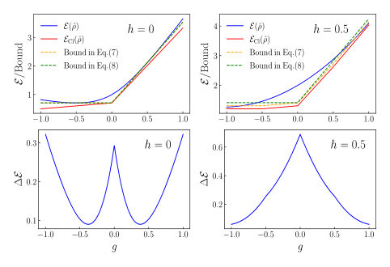
Summary. This paper introduces 'Clifford ergotropy' to study how restricting control operations to the Clifford group affects energy extraction. It proves that higher levels of quantum magic act as an obstacle to work extraction and shows that in large quantum systems, this restriction leads to a vanishingly small amount of extractable energy.
Why it may be interesting. It provides a fundamental link between quantum information resources (magic) and thermodynamic work extraction, offering a new perspective on the limits of energy extraction in many-body dynamics.
Main problem. The paper investigates the interplay between quantum thermodynamics and 'magic' (non-stabilizerness) by quantifying how much energy can be extracted from a quantum state when operations are restricted to the Clifford group.
Main result. The authors derive a universal upper bound on Clifford ergotropy that decreases as magic increases, and demonstrate that in many-body systems, Clifford ergotropy macroscopically vanishes for typical states, suggesting a Clifford-restricted second law of thermodynamics.
Method. The study uses Pauli basis expansions, Hölder's inequality for deriving bounds, and the infinite-order filtered Stabilizer Renyi Entropy as a measure of magic, alongside concentration of measure arguments for many-body limits.
Model / system. The analysis covers single-qubit systems, two-qubit transverse field Ising models, and large-scale many-body systems such as the 1D classical Ising model and the transverse-field Ising model.
Key observables. Clifford ergotropy (E_Cl), standard ergotropy (E), ergotropy gap (delta E), and infinite-order filtered Stabilizer Renyi Entropy (M_infinity).
Important parameters / regimes. The number of qubits (N), the magic measure (M_infinity), and the scaling limits of the large-N (thermodynamic) regime.
Assumptions / limitations. The many-body results rely on the assumption of Haar-randomness and the concentration of measure in high-dimensional Hilbert spaces.
Figures summary. The notes suggest figures illustrating the control landscape of Clifford ergotropy in two-qubit systems, specifically showing sharp transitions or cusps in the ergotropy gap.
Paper structure. The paper introduces the concept of Clifford ergotropy, provides analytical bounds and single-qubit/two-qubit demonstrations, and concludes with the thermodynamic implications for many-body systems and the extensivity of magic.
We discuss the interplay between thermodynamics and magic resources in closed quantum dynamics by introducing Clifford ergotropy, the amount of extractable energy under the restriction to Clifford operations. We provide universal upper bounds on Clifford ergotropy, which decrease with increasing magic as quantified by the infinite-order filtered stabilizer Rényi entropy. We demonstrate the utility of this bound for one- and two-qubit systems, with the latter exhibiting a notable transition in the control landscape of Clifford ergotropy. Finally, we show that our analysis has nontrivial consequences even for many-body systems, including a form of the second law of thermodynamics under Clifford operations for typical quantum states.
Authors: A. I. Lvovsky, Michael R. Grace, Saikat Guha, Mankei Tsang, Gerardo Adesso, Nicolas Treps
Type: theory · Category: quantum information and computing · PDF: https://arxiv.org/pdf/2605.10767v1
Analysis basis: abstract only; PDF text extraction failed or PDF unavailable
Topic relevance: 🔥 quantum measurements 4/5 · interference shaping light 2/5
Summary. This review explores how quantum estimation theory can be used to surpass the classical diffraction limit in optical imaging. It details optimal detection strategies, such as spatial-mode demultiplexing, to achieve sub-Rayleigh resolution. The paper also connects these theoretical advances to recent experimental successes in microscopy and optical sensing.
Why it may be interesting. It provides a fundamental link between quantum estimation theory and practical optical sensing, offering insights into how quantum-limited measurements can surpass classical resolution limits in microscopy and astronomy.
Main problem. Overcoming the classical diffraction limit in passive optical imaging by addressing the fundamental noise limits imposed by the quantum nature of light.
Main result. The review establishes a theoretical framework using quantum estimation theory to identify optimal detection strategies that achieve sub-Rayleigh resolution in imaging, classification, and localization.
Method. The authors utilize quantum measurement and estimation theory, specifically applying quantum Cramér-Rao bounds, Chernoff bounds, and spatial-mode demultiplexing receivers.
Model / system. The paper focuses on passive optical imaging systems involving sub-Rayleigh incoherent sources, extending to multiparameter and partially coherent light scenarios.
Key observables. Spatial information, classification accuracy, localization precision, and quantum Cramér-Rao/Chernoff bounds.
Important parameters / regimes. The diffraction limit, quantum noise levels, and sub-Rayleigh scales.
Assumptions / limitations. The framework assumes the imaging process can be reformulated as a quantum measurement and estimation problem.
Paper structure. The paper begins with the theoretical framework of quantum estimation (Cramér-Rao and Chernoff bounds), moves to the construction of optimal receivers like spatial-mode demultiplexing, discusses extensions to complex light scenarios, and concludes with a survey of experimental demonstrations and applications.
For more than a century, the diffraction limit has defined the resolution achievable by passive optical imaging systems. Although some resolution improvement can be gained through classical data processing of the image, it is limited by the noise arising from quantum nature of light. Minimizing the effect of this noise requires quantum treatment of optical imaging. By reformulating imaging as a problem of quantum measurement and estimation, it becomes possible to identify optimal detection strategies that recover spatial information previously thought inaccessible. This review summarizes the theoretical framework that underpins this development, from the formulation of quantum Cramér-Rao bounds and Chernoff bounds to the construction of receivers that attain them, such as those based on spatial-mode demultiplexing. We show how these methods can beat conventional imaging in the classification, localization, and imaging of sub-Rayleigh incoherent sources. We then discuss extensions to multiparameter and partially coherent scenarios, and highlight the unifying connections between estimation and discrimination tasks. Finally, we survey recent experimental demonstrations that approach quantum-limited resolution and outline emerging applications in microscopy, astronomy, and optical sensing.
Authors: Andrew Steane
Type: theory · Category: quantum information and computing · PDF: https://arxiv.org/pdf/2605.08375v1
Analysis basis: abstract only; PDF text extraction failed or PDF unavailable
Topic relevance: 🔥 quantum measurements 4/5 · entanglement & information structure 2/5
Summary. This paper analyzes the Frauchiger-Renner Wigner's friend scenario to argue against interpretations of quantum mechanics based on subjective collapse. It highlights that any valid reasoning from observations must consider the possibility of those observations being erased by future quantum operations. The work clarifies that these paradoxes do not inherently favor many-worlds over single-world interpretations.
Why it may be interesting. It addresses fundamental questions regarding the boundary between quantum and classical regimes and the logical consistency of measurement in many-body or open quantum systems.
Main problem. The paper examines the validity of the isolated system approximation and the implications of the Frauchiger-Renner extended Wigner's friend scenario for quantum interpretations.
Main result. The author argues that subjective collapse interpretations fail, but this does not distinguish between single-world and many-world interpretations; furthermore, valid reasoning from observations must account for potential future quantum erasure.
Method. Theoretical analysis of thought experiments (Wigner's friend, Frauchiger-Renner) and logical reasoning regarding quantum measurement and erasure.
Model / system. The paper discusses the conceptual framework of an isolated system undergoing measurement-like processes and the logic of quantum-erasure scenarios.
Assumptions / limitations. The validity of the approximation of an isolated system during measurement-like processes is questioned.
Paper structure. The paper discusses the validity of isolated systems, analyzes the implications of the Frauchiger-Renner experiment for subjective collapse, compares single-world vs many-world interpretations, and concludes with the necessity of accounting for quantum erasure in logical reasoning.
The concept of an isolated system, and Frauchiger and Renner's extended `Wigner's friend' scenario are discussed. It is argued that: (i) it is questionable whether the approximation of the isolated system is valid when measurement-like processes are involved; (ii) one may infer, from Frauchiger and Renner's thought-experiment, and similar thought-experiments, that any interpretation of quantum theory involving subjective collapse fails; (iii) this does not distinguish single-world from many-world (relative-state) interpretations of quantum theory; (iv) reasoning from observations has to take into account the possible quantum-erasure of those observations if it is to be valid reasoning; (v) a single-world interpretation is valid if certain kinds of outcome are not quantum-erased in the future.
Authors: Sayan Patra, Abhinav Parakh, Xiaoxing Xia, Juergen Biener, Hartmut Häffner, Kristin M. Beck
Type: experiment · Category: other · PDF: https://arxiv.org/pdf/2605.08502v1
Analysis basis: abstract only; PDF text extraction failed or PDF unavailable
Topic relevance: 🔥 QC/QI experiment 4/5
Summary. The paper describes the design and fabrication of a 3D-printed micro-ion trap with a specialized loading zone. By increasing the electrode separation in the loading area, the design reduces the Mathieu-q parameter to improve the capture and cooling of hot ions. This approach could significantly reduce experimental overhead in large-scale quantum-CCD architectures.
Why it may be interesting. This work presents a practical hardware solution for improving the scalability of ion-trap quantum computing by addressing the experimental overhead and instability associated with ion loading.
Main problem. Efficiently loading ions from thermal ovens into micro-traps often causes thermal instability and difficulty in laser cooling hot ions due to high Mathieu-q parameters.
Main result. The researchers successfully fabricated a micro-ion trap using 3D-printing that features a spatially distinct loading zone with increased electrode separation, facilitating more effective hot-ion capture.
Method. The team used 3D-printing technology to fabricate the RF rails of a four-rod ion trap and performed simulations to predict ion capture efficiency across various Mathieu-q parameters.
Model / system. A micro-ion trap consisting of a four-rod design with a 3D-printed loading zone, specifically designed to increase the ion-electrode separation (r0) in the loading region.
Key observables. Trapped ion fraction from a simulated thermal source and the Mathieu-q parameter.
Important parameters / regimes. Mathieu-q parameter, ion-electrode separation (r0), and RF potential.
Assumptions / limitations. The study assumes the effectiveness of the design based on simulations of a thermal source and discusses limitations inherent to current additive manufacturing techniques.
Paper structure. The paper introduces the 3D-printed trap design, presents simulations of ion capture efficiency, demonstrates the manufacturability of the 3D-printed RF rails, compares the 3D design to planar traps, and concludes with applications for quantum-CCD architectures.
We leverage recent advances in 3D-printing technology to design and fabricate a micro-ion trap with a spatially distinct loading zone for more efficient loading of ions from effusive thermal ovens. The design reduces the Mathieu-$q$ parameter in the loading zone by increasing the ion-electrode separation $r_0$, thereby potentially facilitating more effective laser cooling of hot ions. This circumvents the temporary thermal instability that arises when the rf potential is reduced during ion loading, a common practice to enable efficient laser cooling of hot ions. Simulations predict that expanding $r_0$ maintains a high trapped ion fraction from a simulated thermal source across a wide range of Mathieu-$q$ parameters. We demonstrate the manufacturability of this design by 3D-printing the rf rails of a four-rod ion trap and discuss the limitations imposed by state-of-the-art additive manufacturing techniques. We briefly compare hot-ion capture in the three-dimensional design presented here with that in a representative planar trap, illustrating one instance in which the former may be better for loading. The article concludes with an outlook for how this design may be incorporated into a quantum-CCD architecture to enhance ion loading and reduce associated experimental overheads.
Authors: Shohei Miyakoshi, Takanori Sugimoto, Tomonori Shirakawa, Seiji Yunoki, Hiroshi Ueda
Type: theory · Category: quantum information and computing · PDF: https://arxiv.org/pdf/2605.08683v1
Analysis basis: abstract only; PDF text extraction failed or PDF unavailable
Topic relevance: 🔥 entanglement & information structure 4/5
Summary. The paper presents a new hybrid quantum-classical method to extract the entanglement spectrum of many-body systems. By using classical post-processing to correct for errors in orthogonality caused by noise, it allows shallow quantum circuits to achieve high numerical accuracy. This approach significantly reduces the complexity and difficulty of optimizing quantum circuits for large-scale systems.
Why it may be interesting. It provides a robust pathway for large-scale entanglement spectrum estimation on NISQ devices by mitigating barren plateaus and hardware noise through classical error-filtering.
Main problem. Estimating the entanglement spectrum of large many-body systems is difficult due to the exponential measurement complexity of tomography and the impact of hardware noise/finite circuit depth on vector orthogonality.
Main result. A hybrid quantum-classical variational framework for partial SVD that uses classical orthogonality correction to decouple numerical accuracy from circuit optimization, enabling high-precision entanglement estimation with shallow circuits.
Method. A deflation-based optimization approach using a hybrid framework built on the canonical form of matrix product states, incorporating classical post-processing for orthogonality correction and a concurrent execution strategy.
Model / system. The framework is benchmarked on the ground states of one- and two-dimensional Heisenberg models.
Key observables. Entanglement spectrum, Schmidt components, and overlap matrices.
Assumptions / limitations. The method assumes the use of a hybrid quantum-classical setup and utilizes classical tensor network contractions for overlap matrices.
Paper structure. The paper introduces a problem (entanglement spectrum complexity), proposes a hybrid variational framework for partial SVD, details a deflation algorithm with classical orthogonality correction, describes a concurrent execution strategy for efficiency, and validates the approach using Heisenberg model benchmarks.
Evaluating the entanglement spectrum is essential for characterizing exotic quantum phases such as quantum criticality and topological order. However, for large quantum many-body systems, this task is hindered by the exponential measurement complexity of standard tomographic techniques. To address this challenge, we introduce a hybrid quantum-classical variational framework for partial singular value decomposition of bipartite states, built on the canonical form of matrix product states. We employ a deflation-based optimization approach to sequentially extract dominant and subdominant Schmidt components of target states. Because hardware noise and finite circuit depth can compromise the mutual orthogonality of these extracted vectors, we propose an improved deflation algorithm incorporating explicit classical orthogonality correction. This classical post-processing acts as an error-filtering mechanism, enabling shallow and suboptimal quantum circuits. As a result, numerical accuracy is decoupled from quantum circuit optimization, mitigating optimization difficulties caused by barren plateaus and hardware noise. Furthermore, shallow ansatzes enable a concurrent execution strategy. Overlap matrices are evaluated by classical tensor network contractions, while cross terms between the target state and the extracted vectors are computed using an auxiliary reference state. This concurrent hybrid design improves computational throughput and bypasses the overhead of controlled target-state preparation. Numerical benchmarks on the ground states of one- and two-dimensional Heisenberg models demonstrate improved accuracy and numerical stability. By mitigating hurdles of circuit depth, optimization hardness, and measurement complexity, our framework provides a robust pathway for large-scale entanglement spectrum estimation on advanced near-term quantum devices.
Authors: Josep Lumbreras, Marco Tomamichel
Type: theory · Category: quantum information and computing · PDF: https://arxiv.org/pdf/2605.09019v1
Analysis basis: abstract only; PDF text extraction failed or PDF unavailable
Topic relevance: 🔥 quantum measurements 4/5
Summary. The paper presents a new algorithm for performing quantum state tomography on pure states of any dimension with minimal disturbance to the state. By working locally on the manifold of pure states, the authors show that the ability to learn states without significant cumulative disturbance extends from qubits to higher-dimensional qudits.
Why it may be interesting. This is highly relevant for quantum information and open quantum systems as it provides a scalable framework for state characterization that preserves the integrity of the quantum state, which is crucial for adaptive measurement protocols.
Main problem. The paper addresses the problem of quantum state tomography for arbitrary finite-dimensional pure states while minimizing the cumulative disturbance caused by measurements.
Main result. The authors develop an algorithm that achieves cumulative regret of O(d^3 log^2 T) and online infidelity of O(d^3 log(T)/t) for any dimension d, proving that minimal-disturbance tomography is a general geometric phenomenon.
Method. The method uses an epoch-based approach where the learner measures pairs of nearby rank-one projectors in opposite tangent directions on the pure-state manifold, combined with a robust variance-adaptive estimator and hot-start regularization.
Model / system. The system consists of an unknown pure quantum state in a finite-dimensional Hilbert space of dimension d, where the learner receives sequential fresh copies of the state.
Key observables. Two-outcome projective measurement results and the resulting online infidelity and cumulative regret.
Important parameters / regimes. The dimension of the Hilbert space (d) and the total number of measured copies (T).
Assumptions / limitations. The states being learned are assumed to be pure states.
Paper structure. The paper extends a previously known qubit solution to qudits by addressing the curvature of the pure-state manifold, introduces an epoch-based measurement strategy using tangent directions, and provides a formal regret and infidelity analysis.
We extend quantum state tomography with minimal cumulative disturbance, first investigated in [arXiv:2406.18370], to arbitrary finite-dimensional pure states. A learner sequentially receives fresh copies of an unknown pure state, chooses a rank-one projector for each copy using the previous outcomes, and performs the corresponding two-outcome projective measurement. The goal is to learn the state while keeping the chosen projectors close to the unknown state in order to minimize disturbance. The qubit solution relies on the special geometry of the Bloch sphere and does not extend directly to qudits, where pure states form a curved manifold. We show that this obstruction can be overcome by working locally on the pure-state manifold. The algorithm proceeds in epochs. In each epoch, it fixes a current estimate, measures pairs of nearby rank-one projectors obtained by moving in opposite tangent directions, and takes differences of the corresponding outcomes. This gives an exact linear observation of the tangent component of the error. The resulting local linear models are combined with a robust variance-adaptive estimator and a hot-start regularization that transfers precision across epochs. For every unknown pure state in dimension \(d\), after \(T\) measured copies, our protocol achieves cumulative regret \(\mathcal{O}(d^3\log^2 T)\), and at each intermediate time \(t\leq T\) its current estimate has online infidelity \(\mathcal{O}(d^3\log(T)/t)\). Hence, pure-state tomography with essentially no cumulative disturbance is not a peculiarity of qubits but a geometric phenomenon that persists for qudits.
Authors: Giorgia Trotta, Paolo Scarafile, Paolo Facchi, Giuseppe Magnifico, Angelo Mariano, Giorgio Parisi, Saverio Pascazio, Karol Życzkowski
Type: theory · Category: quantum information and computing · PDF: https://arxiv.org/pdf/2605.10314v1
Analysis basis: abstract only; PDF text extraction failed or PDF unavailable
Topic relevance: 🔥 entanglement & information structure 4/5
Summary. The paper demonstrates that Hadamard states, which have equal weights in the computational basis, are more entangled on average than Haar-random states. It highlights that hypergraph states are particularly useful for searching for maximally multipartite entangled states due to their simplicity and high entanglement probability.
Why it may be interesting. This is interesting for many-body dynamics and quantum information because it identifies a computationally tractable class of states (Hadamard/hypergraph states) that are more likely to yield high entanglement than standard random states, which is crucial for studying entanglement scaling in many-body systems.
Main problem. The study aims to compare the multipartite entanglement properties of Haar-typical states against Hadamard states, specifically looking for classes of states that are easier to sample but highly entangled.
Main result. Hadamard states exhibit a higher average degree of entanglement than Haar-typical states, with hypergraph states (real coefficients with alternating signs) being particularly effective for finding maximally multipartite entangled states.
Method. The authors use analytical and numerical calculations to analyze the distribution of purity among balanced bipartitions for different ensembles of states.
Model / system. The study considers pure quantum states of n-qubits, specifically comparing Haar-random states on the unit sphere to Hadamard states characterized by equal weights in the computational basis.
Key observables. Purity of balanced bipartitions and multipartite entanglement measures.
Important parameters / regimes. Number of qubits (n), phase distributions of Hadamard states, and the specific sign structure of coefficients (e.g., hypergraph states).
Assumptions / limitations. The analysis is focused on pure states and assumes specific statistical distributions (Haar vs. Hadamard) for the ensembles.
Paper structure. The paper introduces the comparison between Haar and Hadamard states, analyzes different phase distributions within Hadamard ensembles, evaluates entanglement via purity distributions, and identifies hypergraph states as a key class for high entanglement.
We investigate multipartite entanglement via the statistical properties of pure quantum states of n-qubits. By analyzing the distribution of purity among balanced bipartitions, we compare Haar-typical states, uniformly distributed on the unit sphere of states, with Hadamard states, being characterized by equal weights in the computational basis. We analyze different ensembles of Hadamard states characterized by their phase distributions. Through analytical and numerical calculations, we show that Hadamard states exhibit, on average, a higher degree of entanglement than Haar-typical states. In addition, we show that a particular class of Hadamard states, characterized by real coefficients with alternating signs, known as hypergraph states, appears especially relevant in the search for maximally multipartite entangled states, both for their structural simplicity and the increased likelihood of sampling highly entangled states. These results identify Hadamard states as a tractable yet promising class for exploring multipartite entanglement structures and advancing the characterization of maximally multipartite entangled quantum states.
Authors: Wladimir Silva
Type: both · Category: quantum information and computing · PDF: https://arxiv.org/pdf/2605.10638v1
Analysis basis: full PDF text, analyzed in chunks
Topic relevance: 🔥 QC/QI experiment 4/5
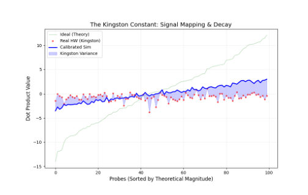
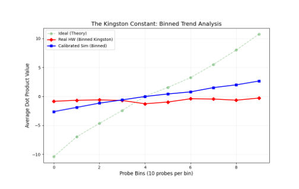
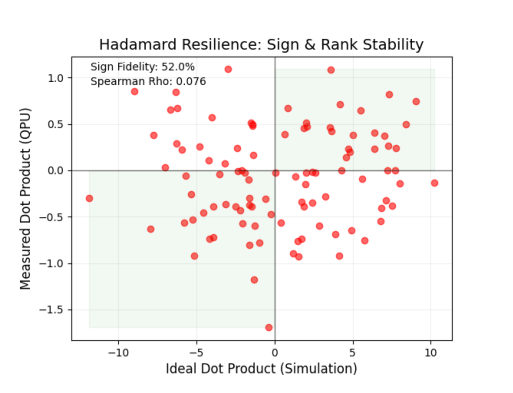
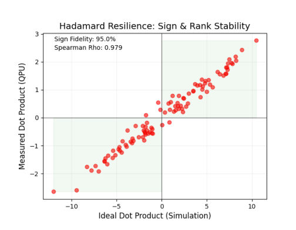
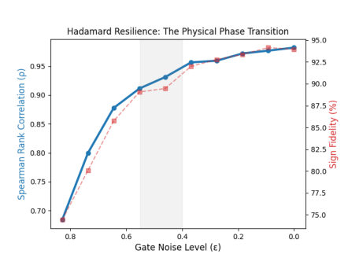
Summary. This paper identifies that the primary barrier to scaling quantum machine learning is not random gate noise, but systematic coherent errors and crosstalk that create a 'Coherence Wall.' It demonstrates that while quantum classifiers are surprisingly resilient to signal magnitude loss, they fail catastrophically once circuit depth exceeds hardware coherence limits. The authors propose a distributed computing approach to bypass these depth limits by partitioning large feature vectors across multiple quantum nodes.
Why it may be interesting. not directly relevant
Main problem. Investigating the discrepancy between stochastic noise models and actual hardware performance in NISQ-era quantum classifiers, specifically identifying the cause of the 'Coherence Gap' at high feature depths.
Main result. The discovery of a 'Coherence Gap' where hardware performance collapses due to coherent phase errors and crosstalk rather than depolarizing noise, alongside the validation of the 'Hadamard Resilience Law' which allows high classification accuracy despite massive signal decay.
Method. The study uses a 'Digital Twin' protocol (calibrated stochastic simulation) compared against experimental data from the IBM Kingston processor, utilizing depth ablation, parametric noise sweeps, and a proposed 'Quantum MapReduce' architecture for distributed computing.
Model / system. The experimental platform is the IBM Kingston superconducting quantum processor, utilizing Hadamard Test circuits with 8 qubits plus one ancilla to perform quantum linear layers for MNIST classification.
Key observables. Expectation values (Z), Spearman rank correlation (rho), Sign Fidelity, Pearson R, and MNIST classification accuracy.
Important parameters / regimes. The Kingston Constant (kappa approx 0.07), the Coherence Gap (delta rho approx 0.91), the Coherence Wall (Dmax approx 3.5k), and the critical threshold (epsilon_crit approx 0.65).
Assumptions / limitations. Assumes that the primary scaling barrier can be distinguished by comparing calibrated stochastic models to physical hardware performance.
Figures summary. Table I compares performance metrics between IBM Kingston and the Digital Twin; Table II summarizes system performance; figures likely illustrate the divergence between hardware and simulation at N=256.
Paper structure. The paper introduces the problem of NISQ scalability, defines the Hadamard Resilience Law and Kingston Constant, presents the discovery of the Coherence Gap through hardware-vs-simulation comparison, identifies coherent errors as the failure mechanism, and proposes a distributed 'Quantum MapReduce' solution.
We report on a fundamental disparity between stochastic noise models and algorithmic performance in NISQ-era classifiers. Utilizing the ibm_kingston processor, we characterize the "Kingston Constant" ($κ\approx 0.07$), representing a 93% signal magnitude collapse. Despite this decay, we demonstrate that the Hadamard Test Perceptron maintains a 93.9% MNIST accuracy, validating our proposed Hadamard Resilience Law. However, a systemic divergence -- the "Coherence Gap" ($Δρ\approx 0.91$) -- emerges at high feature depths ($N=256$), where physical hardware collapses while stochastic simulations remain resilient. This gap identifies coherent phase errors, rather than depolarizing noise, as the primary barrier to scaling quantum linear layers. Furthermore, experimental results on the ibm_kingston processor reveal a "Coherence Wall" at $N=256$, where circuit depth ($D \approx 10k$) exceeds the hardware's resilient depth limit ($D_{max} \approx 3.5k$). We provide a refined hardware-aware model that accounts for this coherence-induced signal decay, establishing a predictive boundary for robust quantum linear layers on current NISQ devices.
← Index · ← Previous · Next →